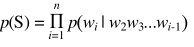

该算法用于预测基金的对数收益率（以下简称收益率）。主要思想为，利用相关指数的收益率乘以权重，拟合对应基金当天的收益率，选择最优的权重组合从而预测下一交易日基金的收益率。公式如下：
该算法的难点在于权值的估算上。由于各指数的收益率在数值上十分接近，且精度要求较高，利用最小二乘法或回归算法无法适应算法的精度要求，易导致预测偏差，所以采用和为1的随机数组作为权重进行预测。同时，为了消除随机数对预测造成的偶然性影响，算法将会对权值进行训练，即使用10000组随机数组模拟拟合基金当天收益率，选择最优解最终的进行预测。
2.灰色模型预测算法
灰色预测是一种对含有不确定因素的系统进行预测的方法。灰色预测通过鉴别系统因素之间发展趋势的相异程度，即进行关联分析，并对原始数据进行生成处理来寻找系统变动的规律，生成有较强规律性的数据序列，然后建立相应的微分方程模型，从而预测事物未来发展趋势的状况。 该算法主要用于预测大盘（上证综指）的收盘价。算法主要思想为，将非线性的大盘收盘价（如图1）通过逐天累加，转化成一条接近线性的函数，（如图2）
采用回归分析对函数进行刻画，然后求导得到相应的白化方程进行预测。公式如下：
X0={x0(1),x0(2),x0(3)…x0(k) }，为非负的原始数据序列
X1={x1(1),x1(2),x1(3)…x1(k)}，其中X1(n)=x0(1)+x0(2)+…+x0(n)
Z1={z1(2),z1(3)…z1(k) }，其中Z1(n)=(x1(n)+x(n-1))/2
假定X0(k) + a * Z1(k) = b， 把X0(k)看成是Z1(k)的导数，则有：
dX1 / dt + a * X1 = b 求导得：
dX1 / dt = -1(y0 - b/a) * exp(-a(t - t0)) 使用dX1 / dt来近似x0，即有：
x0(k)= -a * (y0 - b/a) * exp(-a(k - t0)) 从而得到预测值：

灰色模型对大盘价格波动较为敏感，可以较为有效地预测大盘走势。相较神经网络在运算速度和预测稳定程度上有优势。
3.文本情感分析算法：
该算法用于分析舆论对股市评价的倾向性，即通过对文本的分析筛选有效关键词，并根据这些关键词的情感属性和概率属性总结出舆论在股市评价上的倾向。 算法的主要采用NGram算法，具体介绍如下：
(1)概括
假设一个句子S可以表示为一个序列S=w1w2…wn，语言模型就是求句子S在某一情感环境下出现的概率P(S)：

这个概率的计算量太大，解决问题的方法是将所有历史w1w2…wi-1按照某个规则映射到等价类S(w1w2…wi-1)，等价类的数目远远小于不同历史的数目，即假定：
当两个历史的最近的N-1个词（或字）相同时，映射两个历史到同一个等价类，在此情况下的模型称之为N-Gram模型。
N-Gram模型被称为一阶马尔科夫链。 N的值不能太大，否则计算仍然太大。 根据最大似然估计，语言模型的参数：
其中，C(w1w2…wi)表示w1w2…wi在训练数据中出现的次数
(２)平滑技术的引入
传统的估计方法对于随机变量£的N次独立观察的样本容量N有如下要求：
N>>K
其中K为随机变量能够取到的值的个数。而在实际语言模型中往往无法满足这个要求。
假设k泛指某一事件，N(k)表示事件k观察到的频数，极大似然法使用相对频数作为对事件k的概率估计：
p(k)=N(k)/N
在语言模型中，训练语料中大量的事件N(k)=0，这显然没有反映真实情况。我们把这个问题称为数据稀疏问题。
因此平滑技术可以去除不必要的ｋ事件，避免N(k)=0的情况。在算法中我们采用了基于lambda表达式的平滑方法。
(３)计数等价类
根据对称性原理，事件除了出现次数之外不应具有细节特征，即所有具有相同计数r=N(k)的事件k（事件出现的次数称为事件的计数）应当具有相同的概率估计值，这些计数相同的事件称为计数等价，将它们组成的一个等价类记为计数等价类Gr。
对于计数为r的计数等价类，定义nr为等价类中成员的个数，pr为等价类中事件的概率，R是最大可能出现的计数次数，则
这些计数等价类就是之后对输入数据进行等价替换从而实现情感分类的主要依据。